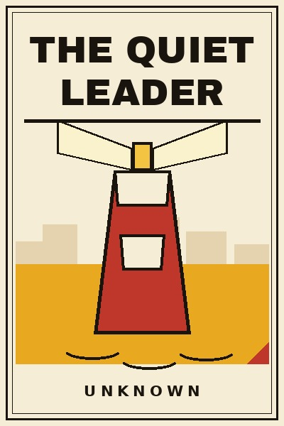
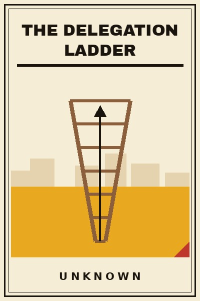
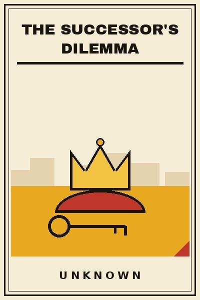
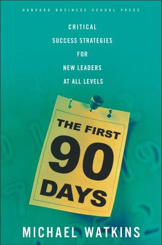
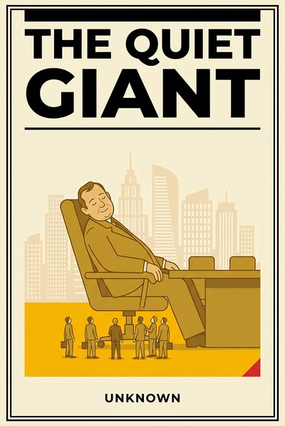
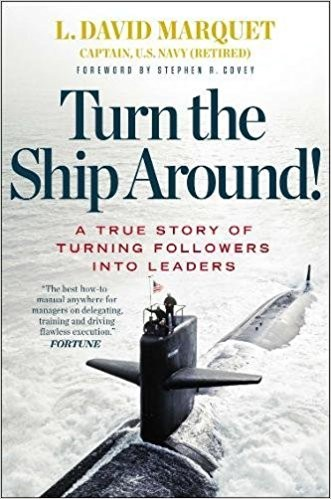

Library › Books like The Decision Room
10 Books Like The Decision Room That Hit the Same Nerve
You finished The Decision Room by Unknown and want the same energy: One bad decision rarely sinks a company. It is the room that made it: the nods, the silence, the boss's face: … Here are 10 more that scratch the same itch, each with a free chapter-by-chapter breakdown, key lessons and action steps on this shelf.

The Quiet Leader The loudest voice in the room is rarely the reason the room wins. This book is about the other kind of leader: the one who listens first, speaks last, and builds teams that keep winning after they leave. READ THE FREE BREAKDOWN →
The Delegation Ladder Most leaders do not delegate badly on purpose. They delegate badly because nobody taught them the ladder: and without it, letting go feels like falling. READ THE FREE BREAKDOWN →
The Successor's Dilemma Building the empire takes a decade. Handing it over takes honesty most leaders never find: and the graveyard of great firms is mostly a graveyard of botched successions. READ THE FREE BREAKDOWN → The Turnaround Captain
Anyone can steer in fair weather. This book is for the day you are handed the wheel in a storm: the diagnosis, the triage, and the courage a turnaround actually takes.
READ THE FREE BREAKDOWN →
The Turnaround Captain
Anyone can steer in fair weather. This book is for the day you are handed the wheel in a storm: the diagnosis, the triage, and the courage a turnaround actually takes.
READ THE FREE BREAKDOWN →

The First 90 Days: Proven Strategies for Getting Up to Speed Faster and Smarter Watkins's transition framework: diagnose the situation type, secure early wins, build alliances, and negotiate success with your boss before the clock does it for you. READ THE FREE BREAKDOWN →
The Quiet Giant The anatomy of institutional decline: how giants drift, filter truth, defend sunk empires and miss their own futures, with the counter-moves that still work. READ THE FREE BREAKDOWN →
Turn the Ship Around!: A True Story of Turning Followers into Leaders David Marquet's account of turning the worst submarine in the US fleet into the best by abandoning leader-follower command for leader-leader empowerment. READ THE FREE BREAKDOWN →Every summary is free: lessons, examples, action steps, audio in your language.